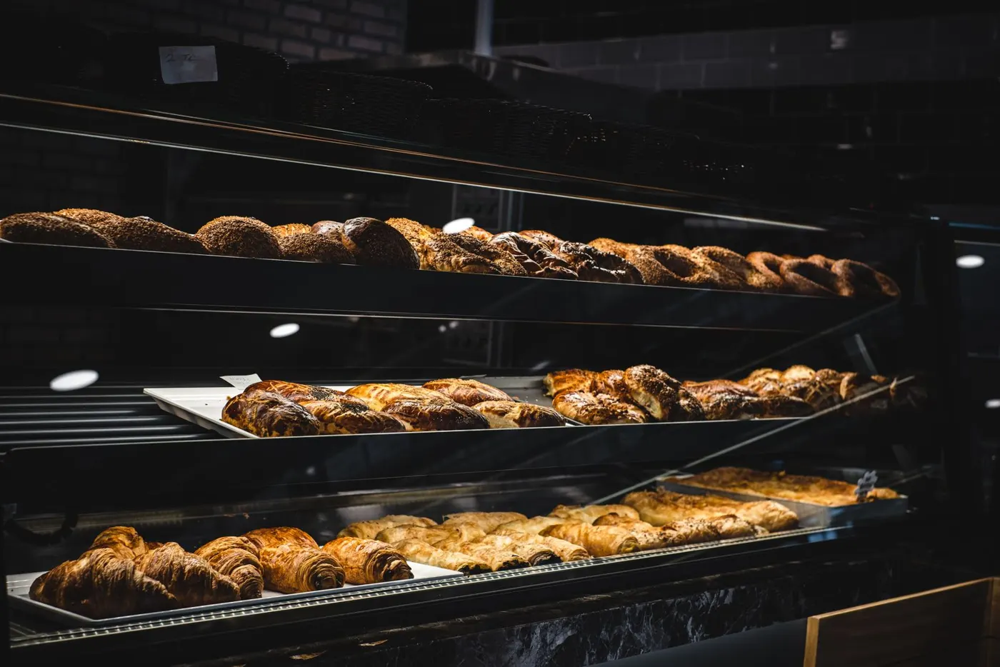
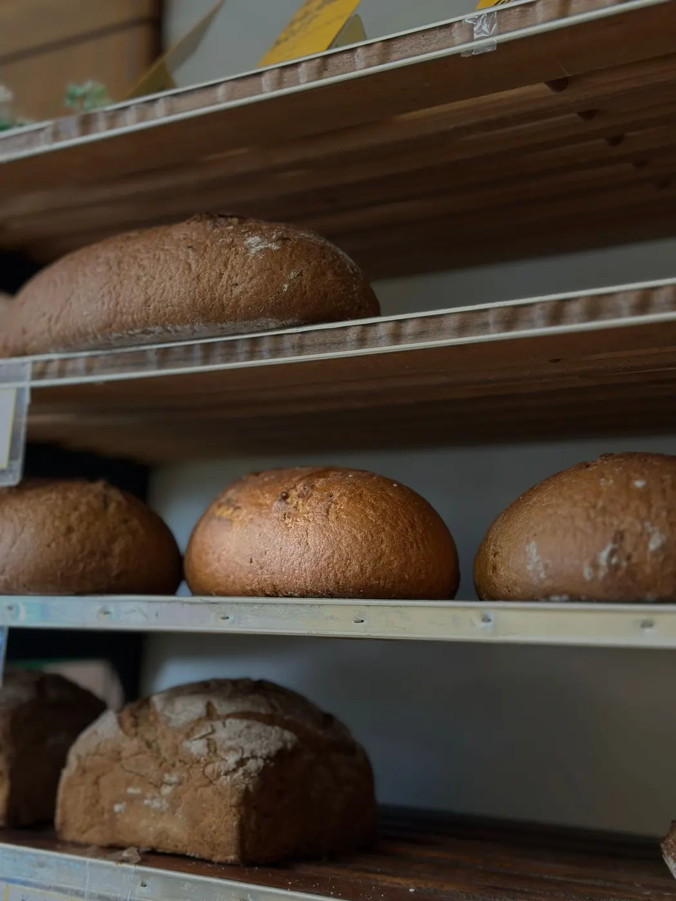

Panes
Del día.
Consultar
Panadería y confitería en Lambaré, sobre la Av. Cacique Lambaré.
Del día.
Consultar
Los más elogiados.
Consultar
Dulces y tortas.
Consultar
Consulte por WhatsApp.
ConsultarHorario según la ficha pública; conviene confirmarlo por teléfono.
Las reseñas elogian los bizcochos y los dulces; una reseña reciente considera altos los precios.
Resumen neutral de reseñas públicas de Google Maps. Sin citas textuales.
Consulte por teléfono o WhatsApp y le contamos qué hay disponible.
Escríbanos o llame y lo consultamos.
En Av. Cacique Lambaré 2052, Lambaré.